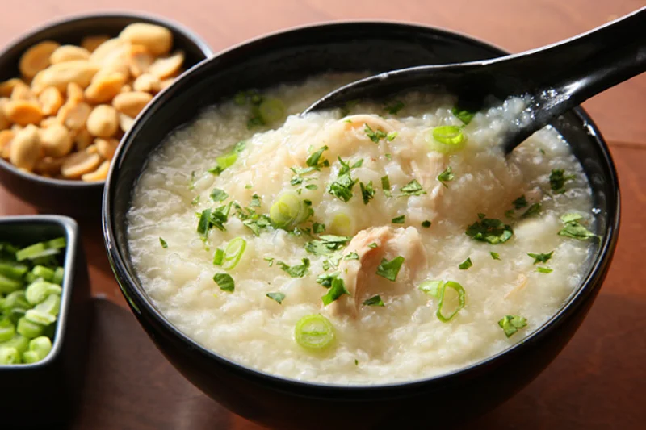

Description
Congee is a soup dish made from rice, after the base congee is made many other ingredients
could be added to suit the eater's desires.
Ingredients
- 1 rice-cup of rice
- 340g of chicken
- 8 cups of water
- 14g of ginger
- Green onion for garnish
- Salt to taste
Steps
- Wash the rice three times and drain it
- Boil water on the side
- Thinly slice the ginger, chop the green onion and any other desired herbs
- Slice and prepare the chicken
- Add the rice to the boiling water
- Cover and wait for 25 minutes (don't stir)
- Whisk rice
- Cook the chicken in the soup
- Add aromatics and flavours